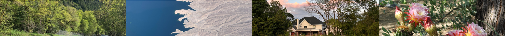
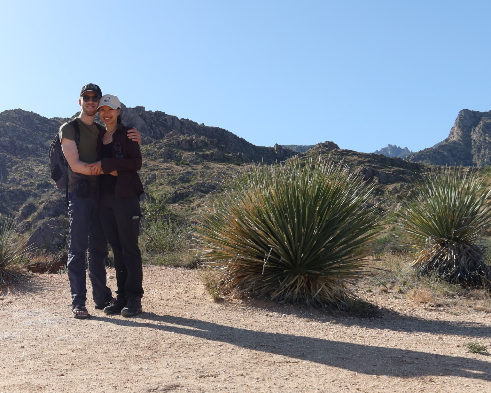
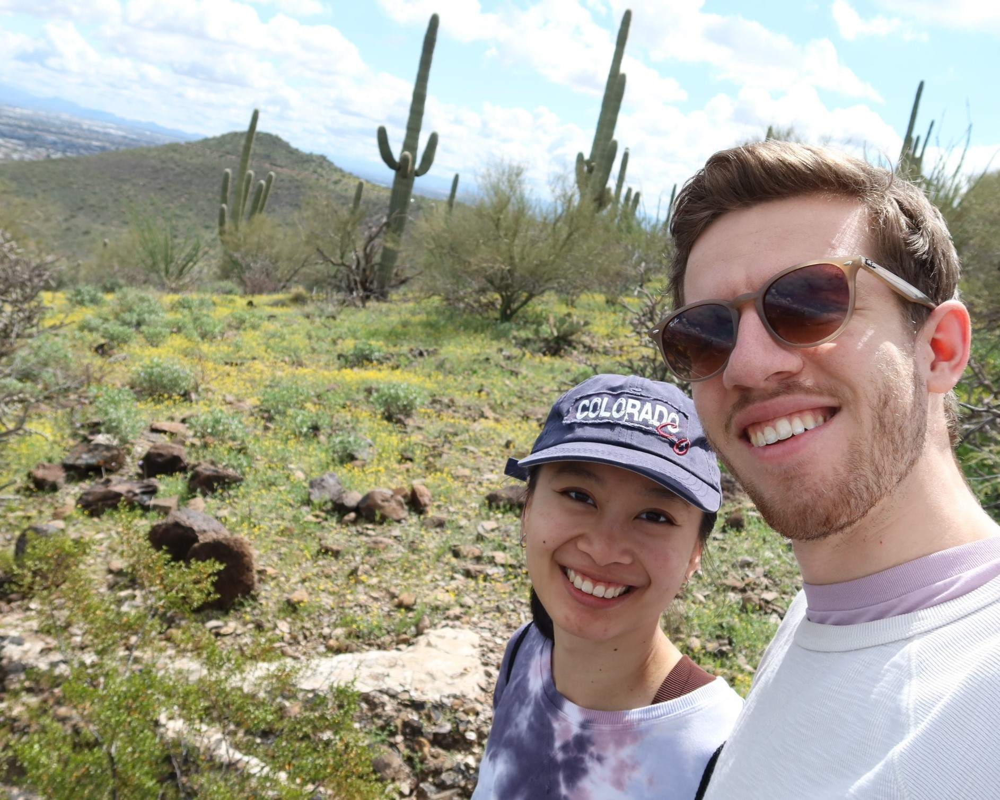
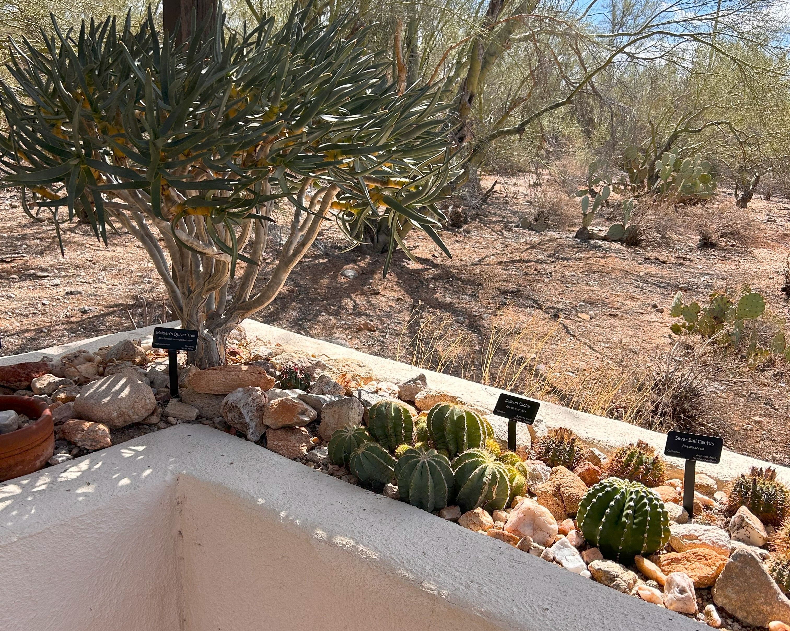

our travels

about
Insert a cool story here whenever you feel inspired haha
see where we’ve gone (together)!
Where we have gone individually is a secret hehe. Hover over the markers to see the name of the location, and click on the markers for a bonus description.
some pics




